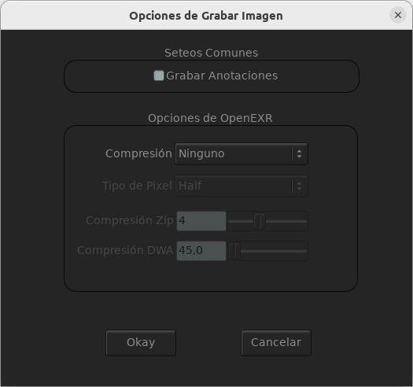

Grabando
Grabando una Película
Cuando se graba una película desde Archivo->Grabar Película o Secuencia y escribir la extensión de la película (como «test.mov») una ventana de opciones aparecerá.

Grabando una Sequencia de Imágenes
Cuando se graba una secuencia de imágenes del menú Archivo->Grabar Película o Secuencia y escribir la extensión de la secuencia con un número (como «prueba.0001.exr») una ventana de opciones aparecerá.
